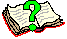

Bitmaps¶
Built-in Bitmaps¶
To get you started quickly, a number of bitmap images from Stephen Bloch’s book Picturing Programs are included. These are:
- Book 
- Calendar

- Glyphs

- Hacker

- StickPerson

- TrainCar
- TrainEngine

If you’re using the normal console, you won’t see the pretty images when you type these:
scala> Hacker
res0: org.dupontmanual.image.Bitmap = Hacker
However, you can see the image by calling the display() method on it. This method will create a dialog box with the image inside:
scala> Hacker.display()
will give you something like
Either click OK or press return to close the dialog box and get back to your console.
Bitmaps from Files¶
If you’d like to use your own bitmaps, you can load an image from the filesystem.
Suppose you’ve saved this lovely image of the letter ‘H’ to the same directory as your project with the name H.png. You can access it with:
scala> Bitmap("H.png")
res1: org.dupontmanual.image.Bitmap = Bitmap("H.png")
You can save it in a val and display it, just like the built-in images:
scala> val h: Image = Bitmap("H.png")
h: org.dupontmanual.image.Image = Bitmap("H.png")
scala> h.display()
should show you a nice dialog box. Note that images aren’t read from the file until they’re needed, so if the file is missing, you mis-typed the name, or the file isn’t really an image, you won’t get an error message until you’ve tried to use the image in some way.
Bitmaps from the Web¶
You can also grab images from the internet, if you know their URL. For example, to grab that lovely ‘H’ from where I found it on the WikiMedia site, you do:
scala> val netH: Image = Bitmap.fromUrl("http://upload.wikimedia.org/wikipedia/commons/a/a2/H.png")
netH: org.dupontmanual.image.Image = Bitmap.fromUrl("http://upload.wikimedia.org/wikipedia/commons/a/a2/H.png")
scala> netH.display()
should show you the same image. Note that images are grabbed from the internet the first time they’re needed, so if you’re not connected to the net, or you’ve typed the wrong URL, you will get an error, but not until you use the image the first time.
Also, any projects that include Bitmap.fromUrl(...) images will only work if you’re connected to the internet. For that reason, it might be worth it to save image files into your project.